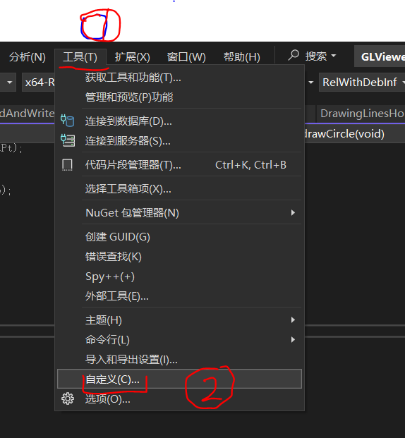
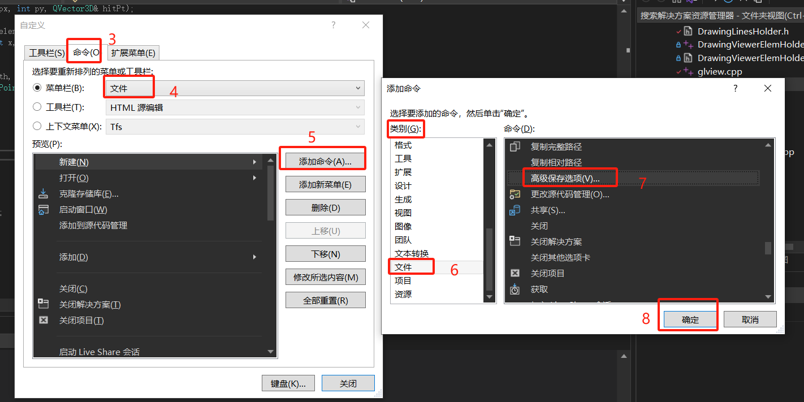
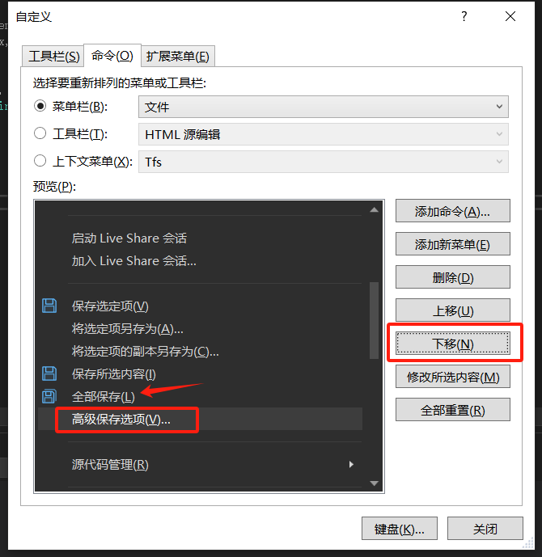
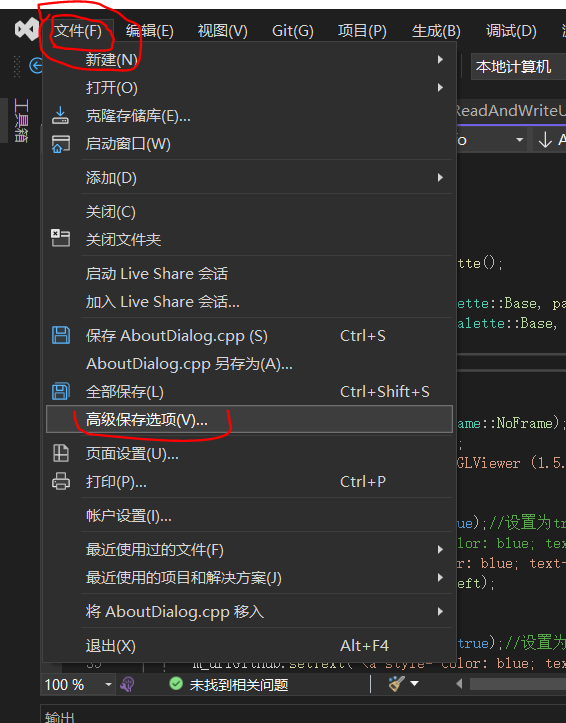
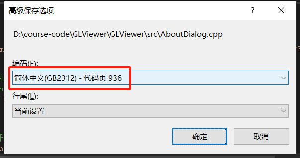

28.其他事项
28.1.窗体中文显示
此前课程中我们添加了关于功能，很多同学会在关于窗体中添加中文信息，在编译运行后显示出来可能是乱码，这时候可以参考如下步骤进行代码页编码格式的设置，
在Visual Studio 2022中文件菜单项中添加高级保存选项：



打开要修改编码格式的代码文件，然后操作，之后中文能够正常显示，


28.2.屏蔽和开启控制台
在此前课程中我们为了调试方便，开启了控制台输出，结合qDebug的使用能够很方便的调试一些报错，如果你没有感受到方便，大概是你没有在代码中使用qDebug，
qDebug() << shader.log();
但在程序发布时我们想屏蔽控制台，如果想打开或关闭调试控制台，需要修改cmakelist中的WIN32_EXECUTABLE值为FALSE或TRUE,
set_target_properties(GLViewer PROPERTIES
${BUNDLE_ID_OPTION}
MACOSX_BUNDLE_BUNDLE_VERSION ${PROJECT_VERSION}
MACOSX_BUNDLE_SHORT_VERSION_STRING ${PROJECT_VERSION_MAJOR}.${PROJECT_VERSION_MINOR}
MACOSX_BUNDLE TRUE
WIN32_EXECUTABLE FLASE
)
28.3.程序版本控制
版本信息是软件生命周期管理的基石，贯穿开发、测试、发布、运维全流程，直接影响稳定性、安全性和用户体验，那么我们来添加版本控制吧。
首先我们在根cmakelists文件所在目录下添加如下内容的VersionInfo.rc.in文件，当然内容可自行更改哈，
1 VERSIONINFO
FILEVERSION ${PROJECT_VERSION_MAJOR}, ${PROJECT_VERSION_MINOR}, ${PROJECT_VERSION_PATCH}
PRODUCTVERSION ${PROJECT_VERSION_MAJOR}, ${PROJECT_VERSION_MINOR}, ${PROJECT_VERSION_PATCH}
FILEFLAGSMASK 0x17L
#ifdef _DEBUG
FILEFLAGS 0x1L
#else
FILEFLAGS 0x0L
#endif
FILEOS 0x4L
FILETYPE 0x0L
FILESUBTYPE 0x0L
BEGIN
BLOCK "StringFileInfo"
BEGIN
BLOCK "040904b0"
BEGIN
VALUE "FileDescription", "CGLib Binary"
VALUE "FileVersion", "${PROJECT_VERSION_MAJOR}, ${PROJECT_VERSION_MINOR}, ${PROJECT_VERSION_PATCH}"
VALUE "InternalName", "CGLib"
VALUE "LegalCopyright", "Copyright (C) 2017~2025 哈市雪花"
VALUE "OriginalFilename", "CGLib"
VALUE "ProductName", "CGLib"
VALUE "ProductVersion", "${PROJECT_VERSION_MAJOR}, ${PROJECT_VERSION_MINOR}, ${PROJECT_VERSION_PATCH}"
END
END
BLOCK "VarFileInfo"
BEGIN
VALUE "Translation", 0x409, 1200
END
END
然后我们在cmakelists中定义上述内容需要的变量，并使用VersionInfo.rc.in进行版本管理，
对根cmakelists修改和添加内容如下，注意project部分只是更改了版本号为1.5.2，其会作为${PROJECT_VERSION_MAJOR}, ${PROJECT_VERSION_MINOR}, ${PROJECT_VERSION_PATCH}变量值，
project(GLViewer VERSION 1.5.2 LANGUAGES CXX)
if(MSVC)
set(MY_VERSIONINFO_RC "${CMAKE_BINARY_DIR}/VersionInfo.rc")
configure_file("${CMAKE_SOURCE_DIR}/VersionInfo.rc.in"
"${MY_VERSIONINFO_RC}")
endif()
然后在src目录下的cmakelists文件中，将${MY_VERSIONINFO_RC}添加到变量PROJECT_SOURCES中，之后在编译可执行程序时作为版本管理资源文件写入到程序文件中，
set(PROJECT_SOURCES ${source} ${source_resources} ${MY_VERSIONINFO_RC})
编译然后查看GLViewer.exe的属性吧，如果正常将会看到如下效果，

提示
《课程上》就学习到这里了，给自己一个庆祝，如有任何建议或意见欢迎联系作者哈市雪花~
Attention
cglib.net网站会持续更新相关内容，欢迎关注和支持；- 如果你关注了作者微信公众号（哈市雪花），会更及时和方便的获取信息哦~
- 你期待《课程下》的推出吗？